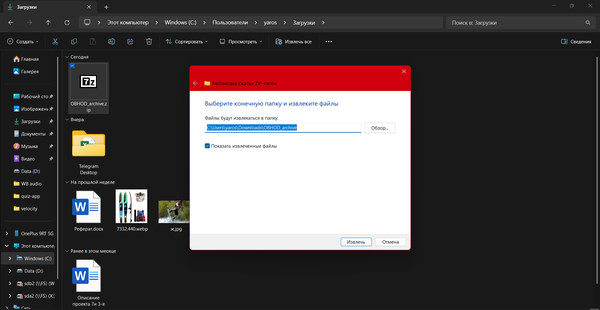
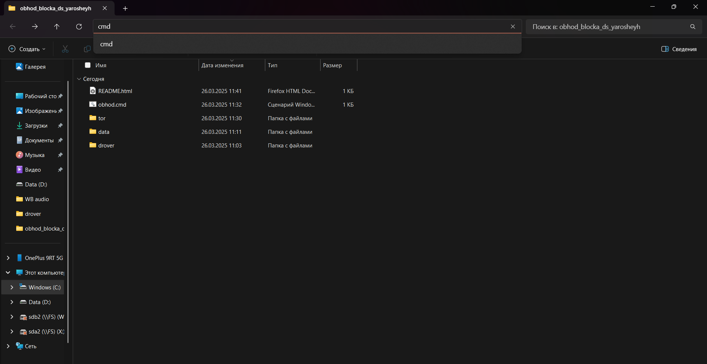
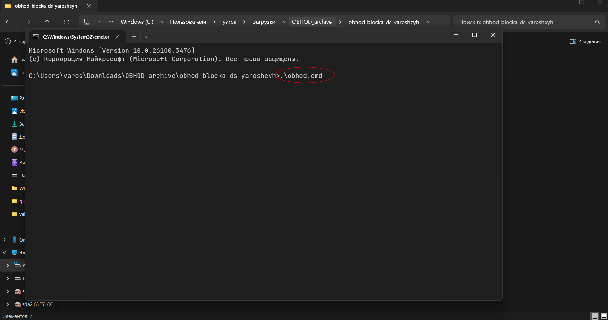
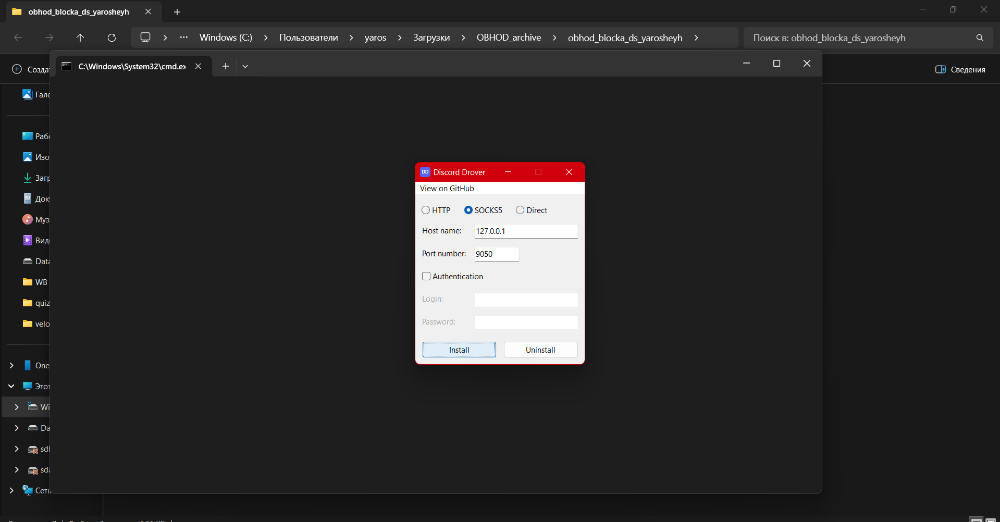
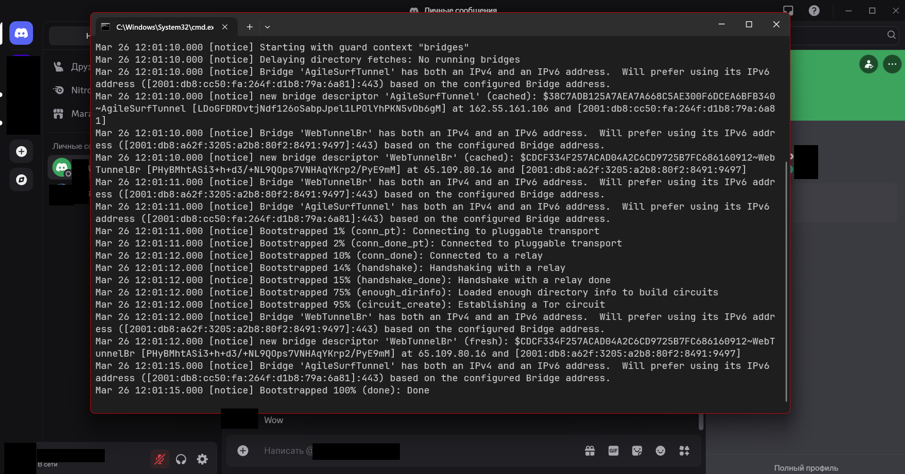

Запуск ДС без проблем*
Работает только на Windows!
- Откройте проводник и разархивируйте данный архив:

- Откройте терминал** в данном каталоге:

- Запустите файл obhod.cmd:

- Установите Drover, нажав кнопку "Install", для работы ДС:

- Всё готово! Теперь у вас работает ДС.

Есть ли здесь вирусы?
VirusTotal может сказать вам, что здесь есть вирусы.
Это не так, и сейчас я скажу почему:
*Автор НЕ призывает вас пользоваться Discord и обходить его блокировку на территории РФ.
**Окно терминала может отличаться от моего, это неважно.
***Сайт с репозиторием заблокирован в РФ (ТСПУ).
В корень сайта
Тсс... Это статика!